Q01 · 31.3 / The Origin of Fungi 正式分類
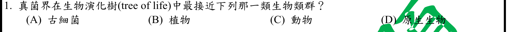
本地原卷PDF23 · 官方混科卷PDF23 · 官方原答案PDF1最下方生物表 · 已核對生物釋疑PDF4下方及5
官方採計：C 原答案：C
未列於本輪取得111生物釋疑PDF4下方及5；依同年度答案PDF1最下方生物表採計；不宣稱不存在其他未取得公告
主分類：Ch31 Fungi
31.3 / The Origin of Fungi
目錄行1989；條目起始印刷頁659；實際目錄 PDF43
次分類：Ch28 Protists
28.5 / Opisthokonts
目錄行1840；條目起始印刷頁613；實際目錄 PDF42
主分類理由：31.3 / The Origin of Fungi：問真菌的親緣起源；659頁將真菌與動物置於較近共同祖先，並指出nucleariids為真菌最近姊妹群。
次分類理由：28.5 / Opisthokonts：613頁後鞭毛生物包含動物、真菌與若干原生生物，直接限制D選項的廣義解讀。
科學說明：官方採C動物。以傳統界級對比可理解命題意圖，但D「原生生物」並非單系群，包含教材659頁所示比動物更接近真菌的nucleariids；不得把C說成不附條件的唯一科學結論。分類由親緣而非營養方式決定。
來源涵蓋範圍：Campbell正文支援分類原理；題目限定及來源措辭差異保留於科學說明。
教材正文：印刷613／PDF662、印刷659／PDF708、印刷660／PDF709
補充來源：本題未另列課本外來源
另行比較：真菌起源或植物營養；D原生生物是否真能排除？
659頁nucleariids與613頁Opisthokonts交叉確認，親緣主31章、次28章；C官方採計與D廣義反例並存，非營養分類。
結論：證據確認，分類疑義已解決。完整覆核紀錄
Q02 · 43.3 / Immunization 正式分類
本地原卷PDF23 · 官方混科卷PDF23 · 官方原答案PDF1最下方生物表 · 已核對生物釋疑PDF4下方及5
官方採計：B 原答案：B
未列於本輪取得111生物釋疑PDF4下方及5；依同年度答案PDF1最下方生物表採計；不宣稱不存在其他未取得公告
主分類：Ch43 The Immune System
43.3 / Immunization
目錄行2908；條目起始印刷頁968；實際目錄 PDF47
主分類理由：43.3 / Immunization：968–969頁疫苗與人工主動免疫最直接涵蓋疫苗平台用途；不在目錄另造COVID疫苗條目。
次分類理由：無另列最小次條目；題問疫苗平台，免疫接種最貼近目的；EMA具名AZ載體補足，教材未收錄商品不冒稱直接記載。
科學說明：官方B為AZ病毒載體疫苗。EMA產品評估確認ChAdOx1非複製型黑猩猩腺病毒載體攜帶S蛋白基因。Campbell支援免疫接種原理，沒有本題四商品的完整比較；mRNA與蛋白疫苗不是病毒載體，分類不移到一般病毒生活史。
來源涵蓋範圍：Campbell支援所列分類原理；具名物種地點、現代技術與科學界線由列示來源補足，實讀範圍見來源紀錄。
教材正文：印刷968／PDF1017、印刷969／PDF1018
補充來源：S02
另行比較：病毒構造19章或免疫接種43章？
題問疫苗平台，免疫接種最貼近目的；EMA具名AZ載體補足，教材未收錄商品不冒稱直接記載。
結論：證據確認，分類疑義已解決。完整覆核紀錄
Q03 · 48.4 / Neurotransmitters 正式分類
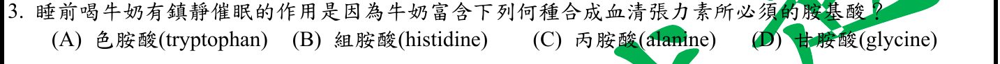
本地原卷PDF23 · 官方混科卷PDF23 · 官方原答案PDF1最下方生物表 · 已核對生物釋疑PDF4下方及5
官方採計：A 原答案：A
未列於本輪取得111生物釋疑PDF4下方及5；依同年度答案PDF1最下方生物表採計；不宣稱不存在其他未取得公告
主分類：Ch48 Neurons, Synapses, and Signaling
48.4 / Neurotransmitters
目錄行3231；條目起始印刷頁1080；實際目錄 PDF48
主分類理由：48.4 / Neurotransmitters：1081頁明列serotonin由tryptophan合成，直接回答神經傳導物質前驅物。
次分類理由：無另列最小次條目；四選項是胺基酸前驅物，1081頁serotonin合成可決定，牛奶催眠前提未據此證成。
科學說明：官方A色胺酸。牛奶情境不是本題分類主軸；色胺酸為血清素前驅物並不單獨證實喝牛奶有鎮靜或治療失眠效果。
來源涵蓋範圍：Campbell正文支援分類原理；題目限定及來源措辭差異保留於科學說明。
教材正文：印刷1080／PDF1129、印刷1081／PDF1130
補充來源：本題未另列課本外來源
另行比較：牛奶營養41章或傳導物質48章？
四選項是胺基酸前驅物，1081頁serotonin合成可決定，牛奶催眠前提未據此證成。
結論：證據確認，分類疑義已解決。完整覆核紀錄
Q04 · 20.1 / DNA Sequencing 正式分類
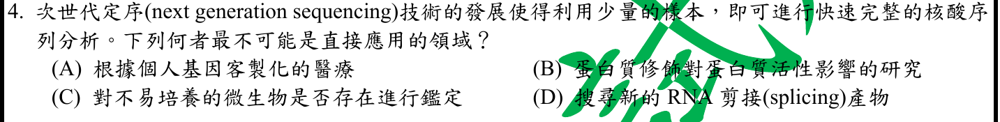
本地原卷PDF23 · 官方混科卷PDF23 · 官方原答案PDF1最下方生物表 · 已核對生物釋疑PDF4下方及5
官方採計：B 原答案：B
未列於本輪取得111生物釋疑PDF4下方及5；依同年度答案PDF1最下方生物表採計；不宣稱不存在其他未取得公告
主分類：Ch20 DNA Tools and Biotechnology
20.1 / DNA Sequencing
目錄行1232；條目起始印刷頁416；實際目錄 PDF40
次分類：Ch21 Genomes and Their Evolution
21.2 / Understanding Genes and Gene Expression at the Systems Level
目錄行1307；條目起始印刷頁446；實際目錄 PDF40
主分類理由：20.1 / DNA Sequencing：416–417頁高通量DNA定序說明NGS取得核酸序列，界定它不能直接測得的蛋白功能層級。
次分類理由：21.2 / Understanding Genes and Gene Expression at the Systems Level：446–447頁蛋白體與系統層級基因表現補足核酸推論和蛋白實測的差別。
科學說明：官方B。NGS能分析核酸與經逆轉錄的RNA，也能間接推論功能，但不能單靠序列直接量測所有轉譯後修飾、蛋白活性或互作；本題「無法」依直接測量層級解讀。
來源涵蓋範圍：Campbell正文支援分類原理；題目限定及來源措辭差異保留於科學說明。
教材正文：印刷416／PDF465、印刷417／PDF466、印刷424／PDF473、印刷425／PDF474、印刷446／PDF495、印刷447／PDF496
補充來源：本題未另列課本外來源
另行比較：蛋白修飾18章可否取代定序20章？
原文最不可能「直接應用」，直接核酸讀取與蛋白活性實測有別；主DNA Sequencing，次系統組學，而非說定序無法間接參與蛋白研究。
結論：證據確認，分類疑義已解決。完整覆核紀錄
Q05 · 45.1 / Intercellular Information Flow 正式分類
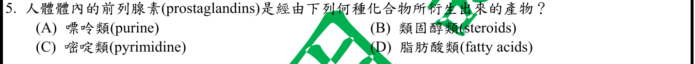
本地原卷PDF23 · 官方混科卷PDF23 · 官方原答案PDF1最下方生物表 · 已核對生物釋疑PDF4下方及5
官方採計：D 原答案：D
未列於本輪取得111生物釋疑PDF4下方及5；依同年度答案PDF1最下方生物表採計；不宣稱不存在其他未取得公告
主分類：Ch45 Hormones and the Endocrine System
45.1 / Intercellular Information Flow
目錄行2998；條目起始印刷頁1000；實際目錄 PDF47
主分類理由：45.1 / Intercellular Information Flow：1001頁局部調節物的prostaglandins為修飾脂肪酸；屬細胞間訊息流動中的旁分泌情境。
次分類理由：無另列最小次條目；1001頁明列修飾脂肪酸；原選項嘌呤／類固醇／嘧啶／脂肪酸已完整比較，局部訊息流動為最小目錄。
科學說明：官方D脂肪酸類。前列腺素不是由嘌呤、嘧啶或類固醇產生；最小目錄沒有單列prostaglandins，採其所屬Intercellular Information Flow。
來源涵蓋範圍：Campbell正文支援分類原理；題目限定及來源措辭差異保留於科學說明。
教材正文：印刷1000／PDF1049、印刷1001／PDF1050
補充來源：本題未另列課本外來源
另行比較：類固醇是否也屬脂質便可選？
1001頁明列修飾脂肪酸；原選項嘌呤／類固醇／嘧啶／脂肪酸已完整比較，局部訊息流動為最小目錄。
結論：證據確認，分類疑義已解決。完整覆核紀錄
Q06 · 41.3 / Digestion in the Stomach 正式分類
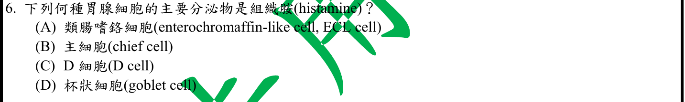
本地原卷PDF23 · 官方混科卷PDF23 · 官方原答案PDF1最下方生物表 · 已核對生物釋疑PDF4下方及5
官方採計：A 原答案：A
未列於本輪取得111生物釋疑PDF4下方及5；依同年度答案PDF1最下方生物表採計；不宣稱不存在其他未取得公告
主分類：Ch41 Animal Nutrition
41.3 / Digestion in the Stomach
目錄行2711；條目起始印刷頁907；實際目錄 PDF46
主分類理由：41.3 / Digestion in the Stomach：907–908頁胃消化與腺體分泌，直接對應胃黏膜細胞及胃酸調控。
次分類理由：無另列最小次條目；907頁胃酸分泌細胞與MeSH組織胺來源分開，ECL是刺激上游而非壁細胞別名。
科學說明：官方A ECL細胞分泌histamine刺激壁細胞分泌酸。Campbell907頁直接列chief與parietal細胞，未細列ECL；NCBI MeSH補足ECL—histamine關係。主細胞分泌胃蛋白酶原；D細胞的somatostatin與杯狀細胞黏液不等於組織胺。
來源涵蓋範圍：Campbell支援所列分類原理；具名物種地點、現代技術與科學界線由列示來源補足，實讀範圍見來源紀錄。
教材正文：印刷907／PDF956、印刷908／PDF957
補充來源：S06
另行比較：壁細胞分泌胃酸是否就是histamine來源？
907頁胃酸分泌細胞與MeSH組織胺來源分開，ECL是刺激上游而非壁細胞別名。
結論：證據確認，分類疑義已解決。完整覆核紀錄
Q07 · 15.4 / Abnormal Chromosome Number 正式分類
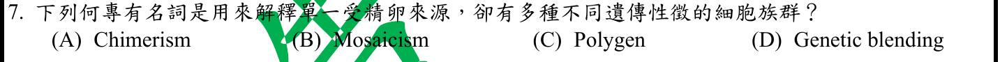
本地原卷PDF23 · 官方混科卷PDF23 · 官方原答案PDF1最下方生物表 · 已核對生物釋疑PDF4下方及5
官方採計：B 原答案：B
未列於本輪取得111生物釋疑PDF4下方及5；依同年度答案PDF1最下方生物表採計；不宣稱不存在其他未取得公告
主分類：Ch15 The Chromosomal Basis of Inheritance
15.4 / Abnormal Chromosome Number
目錄行968；條目起始印刷頁307；實際目錄 PDF39
次分類：Ch15 The Chromosomal Basis of Inheritance
15.2 / X Inactivation in Female Mammals
目錄行948；條目起始印刷頁300；實際目錄 PDF39
主分類理由：15.4 / Abnormal Chromosome Number：307頁有絲分裂不分離可在同一個體產生不同染色體組成的細胞系，是題目遺傳嵌合的直接教材例子。
次分類理由：15.2 / X Inactivation in Female Mammals：300頁X失活造成表現型嵌合，用來比較功能性嵌合與DNA差異。
科學說明：官方B mosaicism。NHGRI定義為單一受精卵來源但細胞具有不同基因組；chimera通常來自不同合子。一般遺傳嵌合也可由受精後序列突變造成，不限染色體數目；X失活是功能性嵌合例子，不能說失活本身必使DNA序列不同。
來源涵蓋範圍：Campbell支援所列分類原理；具名物種地點、現代技術與科學界線由列示來源補足，實讀範圍見來源紀錄。
教材正文：印刷300／PDF349、印刷307／PDF356、印刷308／PDF357
補充來源：S07
另行比較：單合子嵌合是否等同多合子chimerism或X失活？
NHGRI單合子定義與307頁受精後分裂錯誤一致；主染色體數目例子、次X失活比較，明記一般嵌合不限此成因。
結論：證據確認，分類疑義已解決。完整覆核紀錄
Q08 · 20.2 / Analyzing Gene Expression 正式分類
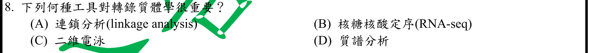
本地原卷PDF23 · 官方混科卷PDF23 · 官方原答案PDF1最下方生物表 · 已核對生物釋疑PDF4下方及5
官方採計：B 原答案：B
未列於本輪取得111生物釋疑PDF4下方及5；依同年度答案PDF1最下方生物表採計；不宣稱不存在其他未取得公告
主分類：Ch20 DNA Tools and Biotechnology
20.2 / Analyzing Gene Expression
目錄行1251；條目起始印刷頁423；實際目錄 PDF40
次分類：Ch21 Genomes and Their Evolution
21.2 / Understanding Genes and Gene Expression at the Systems Level
目錄行1307；條目起始印刷頁446；實際目錄 PDF40
主分類理由：20.2 / Analyzing Gene Expression：424–425頁RNA-seq以cDNA定序比較細胞轉錄本，最貼近題目要研究的RNA表現集合。
次分類理由：21.2 / Understanding Genes and Gene Expression at the Systems Level：446–447頁轉錄體與蛋白體的整體比較，保留組學層級的次要關係。
科學說明：官方B。RNA-seq適用轉錄體分析，蛋白體或代謝物方法對象不同。原題「轉錄質體學」照留，科學說明使用轉錄體學（transcriptomics）；不默改原圖或原題。
來源涵蓋範圍：Campbell正文支援分類原理；題目限定及來源措辭差異保留於科學說明。
教材正文：印刷423／PDF472、印刷424／PDF473、印刷425／PDF474、印刷446／PDF495、印刷447／PDF496
補充來源：本題未另列課本外來源
另行比較：蛋白體的二維電泳與質譜可否直接測RNA？
425頁RNA-seq支持核糖核酸定序；原「轉錄質體學」保留並註轉錄體，主基因表現分析、次系統組學。
結論：證據確認，分類疑義已解決。完整覆核紀錄
Q09 · 18.3 / Effects on mRNAs by MicroRNAs and Small Interfering RNAs 正式分類
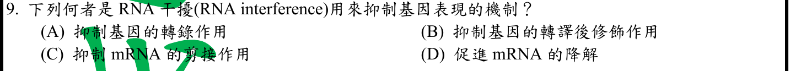
本地原卷PDF23 · 官方混科卷PDF23 · 官方原答案PDF1最下方生物表 · 釋疑PDF4
官方採計：D 原答案：D
同年度釋疑維持原答案D
主分類：Ch18 Regulation of Gene Expression
18.3 / Effects on mRNAs by MicroRNAs and Small Interfering RNAs
目錄行1136；條目起始印刷頁379；實際目錄 PDF39
次分類：Ch18 Regulation of Gene Expression
18.3 / Chromatin Remodeling and Effects on Transcription by ncRNAs
目錄行1139；條目起始印刷頁380；實際目錄 PDF39
主分類理由：18.3 / Effects on mRNAs by MicroRNAs and Small Interfering RNAs：380頁siRNA與miRNA對mRNA的作用直接涵蓋RNAi促進降解及抑制轉譯。
次分類理由：18.3 / Chromatin Remodeling and Effects on Transcription by ncRNAs：380頁ncRNA對染色質與轉錄的作用支持核內沉默界線，同章最小次目保留。
科學說明：官方釋疑維持D促進mRNA降解。原題問RNAi作用，沒有明寫只限siRNA主要機制；公告承認某些情況抑制轉錄，Campbell380也支持ncRNA轉錄沉默，因此採D不表示A機制不存在。公告另談「抑制轉譯」，但原C實為「抑制mRNA的剪接」，兩者不可混同；B為轉譯後修飾，也不是翻譯抑制。其他版本及Becker頁碼只是公告引文，未冒充本輪12e實讀。
來源涵蓋範圍：Campbell正文支援分類原理；題目限定及來源措辭差異保留於科學說明。
教材正文：印刷379／PDF428、印刷380／PDF429
補充來源：本題未另列課本外來源
另行比較：公告抑制轉譯能否誤套原C；A核內沉默是否存在？
完整題文讀回確認C為剪接、B為轉譯後修飾，都不是抑制轉譯。D採計保留，A在特定RNAi核內機制下可能，主mRNA效果、次染色質ncRNA。
結論：證據確認，分類疑義已解決。完整覆核紀錄
Q10 · 42.4 / Blood Composition and Function 正式分類
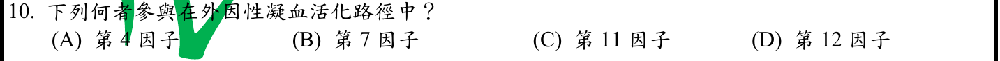
本地原卷PDF23 · 官方混科卷PDF23 · 官方原答案PDF1最下方生物表 · 釋疑PDF4
官方採計：A/B 原答案：B
同年度釋疑更正為A/B皆可；原答案B保留
主分類：Ch42 Circulation and Gas Exchange
42.4 / Blood Composition and Function
目錄行2802；條目起始印刷頁934；實際目錄 PDF46
主分類理由：42.4 / Blood Composition and Function：936頁凝血級聯、血小板及纖維蛋白屬Blood Composition and Function，沒有獨立凝血因子最小目錄。
次分類理由：無另列最小次條目；PDF4結果欄明列(A)(B)皆可；原B及採計A/B分欄，沒有用科學偏好取代正式更正。
科學說明：原答案B；同年度釋疑PDF4更正A/B皆可。公告解釋鈣為第IV凝血因子，與VII及組織因子形成外在路徑相關複合物。Campbell支援凝血原理，未列完整因子編號；精確採計依111官方更正，不依教材自行選回單一答案。
來源涵蓋範圍：Campbell正文支援分類原理；題目限定及來源措辭差異保留於科學說明。
教材正文：印刷934／PDF983、印刷935／PDF984、印刷936／PDF985、印刷937／PDF986
補充來源：本題未另列課本外來源
另行比較：原B是否應保持單選；A鈣與VII可否皆算？
PDF4結果欄明列(A)(B)皆可；原B及採計A/B分欄，沒有用科學偏好取代正式更正。
結論：證據確認，分類疑義已解決。完整覆核紀錄
Q11 · 17.4 / Completing and Targeting the Functional Protein 正式分類
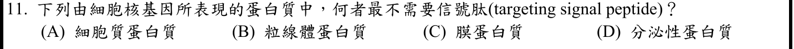
本地原卷PDF23 · 官方混科卷PDF23 · 官方原答案PDF1最下方生物表 · 已核對生物釋疑PDF4下方及5
官方採計：A 原答案：A
未列於本輪取得111生物釋疑PDF4下方及5；依同年度答案PDF1最下方生物表採計；不宣稱不存在其他未取得公告
主分類：Ch17 Gene Expression: From Gene to Protein
17.4 / Completing and Targeting the Functional Protein
目錄行1075；條目起始印刷頁352；實際目錄 PDF39
主分類理由：17.4 / Completing and Targeting the Functional Protein：354頁蛋白質標的訊號與去向直接對應缺少signal peptide的細胞質蛋白。
次分類理由：無另列最小次條目；354頁另有導向粒線體等的訊號；A依題設最不需要，主蛋白標的定位即可。
科學說明：官方A。預期留在細胞質的蛋白不需分泌路徑訊號；粒線體蛋白則常有自己的導入序列，不能把「不經ER」誤作完全無標的訊號。題目採一般定位規則，不外推所有非典型分泌途徑。
來源涵蓋範圍：Campbell正文支援分類原理；題目限定及來源措辭差異保留於科學說明。
教材正文：印刷352／PDF401、印刷353／PDF402、印刷354／PDF403
補充來源：本題未另列課本外來源
另行比較：粒線體不經ER是否表示無signal peptide？
354頁另有導向粒線體等的訊號；A依題設最不需要，主蛋白標的定位即可。
結論：證據確認，分類疑義已解決。完整覆核紀錄
Q12 · 33.3 / Flatworms 正式分類
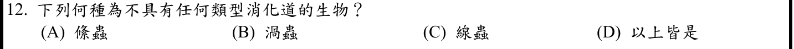
本地原卷PDF23 · 官方混科卷PDF23 · 官方原答案PDF1最下方生物表 · 已核對生物釋疑PDF4下方及5
官方採計：A 原答案：A
未列於本輪取得111生物釋疑PDF4下方及5；依同年度答案PDF1最下方生物表採計；不宣稱不存在其他未取得公告
主分類：Ch33 An Introduction to Invertebrates
33.3 / Flatworms
目錄行2111；條目起始印刷頁694；實際目錄 PDF44
主分類理由：33.3 / Flatworms：697頁絛蟲無口及胃循環腔，靠體表吸收宿主消化產物；最小目錄Flatworms直接涵蓋。
次分類理由：無另列最小次條目；697頁絛蟲lack a mouth and gastrovascular cavity是直接證據；渦蟲仍有消化腔，不能把整個Flatworms特徵等同絛蟲。
科學說明：官方A絛蟲。渦蟲等有胃循環腔；不能把所有扁形動物都說成沒有消化系統。697頁完整文字在跨頁Tapeworms段落續行，已另讀而非只憑696頁小標題。
來源涵蓋範圍：Campbell正文支援分類原理；題目限定及來源措辭差異保留於科學說明。
教材正文：印刷694／PDF743、印刷695／PDF744、印刷696／PDF745、印刷697／PDF746
補充來源：本題未另列課本外來源
另行比較：絛蟲和渦蟲同為扁蟲能否一起選？
697頁絛蟲lack a mouth and gastrovascular cavity是直接證據；渦蟲仍有消化腔，不能把整個Flatworms特徵等同絛蟲。
結論：證據確認，分類疑義已解決。完整覆核紀錄
Q13 · 9.6 / The Versatility of Catabolism 正式分類
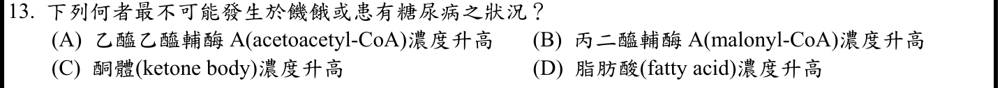
本地原卷PDF24 · 官方混科卷PDF24 · 官方原答案PDF1最下方生物表 · 已核對生物釋疑PDF4下方及5
官方採計：B 原答案：B
未列於本輪取得111生物釋疑PDF4下方及5；依同年度答案PDF1最下方生物表採計；不宣稱不存在其他未取得公告
主分類：Ch09 Cellular Respiration and Fermentation
9.6 / The Versatility of Catabolism
目錄行608；條目起始印刷頁182；實際目錄 PDF37
次分類：Ch09 Cellular Respiration and Fermentation
9.6 / Biosynthesis (Anabolic Pathways)
目錄行611；條目起始印刷頁183；實際目錄 PDF37
主分類理由：9.6 / The Versatility of Catabolism：182–183頁脂肪分解、beta氧化及脂肪燃料利用提供飢餓代謝分類主軸。
次分類理由：9.6 / Biosynthesis (Anabolic Pathways)：183頁生合成說明脂肪合成與分解的方向差異，對應malonyl-CoA為合成原料。
科學說明：官方B malonyl-CoA最不易升高。以飢餓及未控制的胰島素缺乏性糖尿病肝代謝為情境，脂肪氧化和酮體生成增加而脂肪合成受抑；malonyl-CoA抑制CPT1的精確機制由1977原始研究及原作者2012回顧補足。Campbell未直接列此中間物；不可外推全部糖尿病型別、組織及時期皆相同。
來源涵蓋範圍：Campbell支援所列分類原理；具名物種地點、現代技術與科學界線由列示來源補足，實讀範圍見來源紀錄。
教材正文：印刷182／PDF231、印刷183／PDF232
補充來源：S13
另行比較：營養疾病41章或分解與合成9章？
四選項皆代謝中間物，182–183頁路徑方向配合JCI原始CPT1證據足以分類；糖尿病異質性不抹除。
結論：證據確認，分類疑義已解決。完整覆核紀錄
Q14 · 27.3 / Nitrogen Metabolism 正式分類
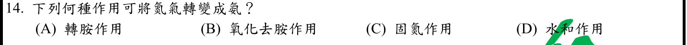
本地原卷PDF24 · 官方混科卷PDF24 · 官方原答案PDF1最下方生物表 · 已核對生物釋疑PDF4下方及5
官方採計：C 原答案：C
未列於本輪取得111生物釋疑PDF4下方及5；依同年度答案PDF1最下方生物表採計；不宣稱不存在其他未取得公告
主分類：Ch27 Bacteria and Archaea
27.3 / Nitrogen Metabolism
目錄行1738；條目起始印刷頁582；實際目錄 PDF42
次分類：Ch37 Soil and Plant Nutrition
37.3 / Bacteria and Plant Nutrition
目錄行2463；條目起始印刷頁814；實際目錄 PDF45
主分類理由：27.3 / Nitrogen Metabolism：582頁定義固氮為N2還原成NH3，直接回答反應類型。
次分類理由：37.3 / Bacteria and Plant Nutrition：815頁根瘤共生固氮說明植物可利用的氮來源，不把固氮誤當植物自行執行。
科學說明：官方C固氮。硝化是銨轉成亞硝酸／硝酸，反硝化方向回到N2；植物同化硝酸也不等於固定大氣N2。
來源涵蓋範圍：Campbell正文支援分類原理；題目限定及來源措辭差異保留於科學說明。
教材正文：印刷582／PDF631、印刷814／PDF863、印刷815／PDF864
補充來源：本題未另列課本外來源
另行比較：植物固氮是否應只列37章？
反應定義在27章Nitrogen Metabolism更直接，37章共生營養作次目；非植物自行把氮氣還原的斷言。
結論：證據確認，分類疑義已解決。完整覆核紀錄
Q15 · 51.2 / Learning 正式分類
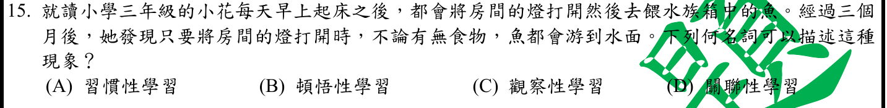
本地原卷PDF24 · 官方混科卷PDF24 · 官方原答案PDF1最下方生物表 · 已核對生物釋疑PDF4下方及5
官方採計：D 原答案：D
未列於本輪取得111生物釋疑PDF4下方及5；依同年度答案PDF1最下方生物表採計；不宣稱不存在其他未取得公告
主分類：Ch51 Animal Behavior
51.2 / Learning
目錄行3424；條目起始印刷頁1144；實際目錄 PDF49
主分類理由：51.2 / Learning：1146頁以兩刺激形成聯結的古典制約，直接涵蓋燈光與食物反覆配對。
次分類理由：無另列最小次條目；原D為關聯性學習；燈光—食物可細分古典制約但不能替換原選項名稱，Learning最小條目確認。
科學說明：官方D關聯性學習；情境可細分為古典制約，屬於Learning最小目錄。操作制約則將行為與後果配對；原D文字是關聯性學習，未擅自換成較窄名詞。
來源涵蓋範圍：Campbell正文支援分類原理；題目限定及來源措辭差異保留於科學說明。
教材正文：印刷1144／PDF1193、印刷1145／PDF1194、印刷1146／PDF1195
補充來源：本題未另列課本外來源
另行比較：關聯學習是否可直接把選項改名古典制約？
原D為關聯性學習；燈光—食物可細分古典制約但不能替換原選項名稱，Learning最小條目確認。
結論：證據確認，分類疑義已解決。完整覆核紀錄
Q16 · 11.2 / Intracellular Receptors 正式分類
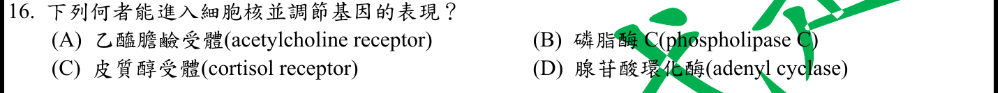
本地原卷PDF24 · 官方混科卷PDF24 · 官方原答案PDF1最下方生物表 · 已核對生物釋疑PDF4下方及5
官方採計：C 原答案：C
未列於本輪取得111生物釋疑PDF4下方及5；依同年度答案PDF1最下方生物表採計；不宣稱不存在其他未取得公告
主分類：Ch11 Cell Communication
11.2 / Intracellular Receptors
目錄行711；條目起始印刷頁220；實際目錄 PDF38
主分類理由：11.2 / Intracellular Receptors：220–221頁胞內類固醇受器複合體直接調控轉錄，是cortisol受器的分子作用模式。
次分類理由：無另列最小次條目；題目要求入核調控基因的分子，胞內受器220–221頁是直接機制，具體cortisol為此家族例子。
科學說明：官方C。Campbell以醛固酮為圖例，支援同類胞內受器原理；cortisol結合受器可調節核內基因表現，不把所有激素受器都等同膜受器或保證每個類固醇作用只經此路徑。
來源涵蓋範圍：Campbell正文支援分類原理；題目限定及來源措辭差異保留於科學說明。
教材正文：印刷220／PDF269、印刷221／PDF270
補充來源：本題未另列課本外來源
另行比較：激素類型45章或訊息受器11章？
題目要求入核調控基因的分子，胞內受器220–221頁是直接機制，具體cortisol為此家族例子。
結論：證據確認，分類疑義已解決。完整覆核紀錄
Q17 · 5.2 / Polysaccharides 正式分類
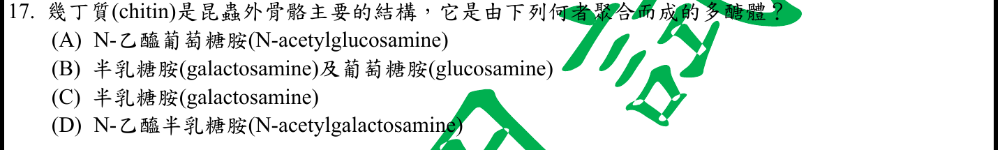
本地原卷PDF24 · 官方混科卷PDF24 · 官方原答案PDF1最下方生物表 · 已核對生物釋疑PDF4下方及5
官方採計：A 原答案：A
未列於本輪取得111生物釋疑PDF4下方及5；依同年度答案PDF1最下方生物表採計；不宣稱不存在其他未取得公告
主分類：Ch05 The Structure and Function of Large Biological Molecules
5.2 / Polysaccharides
目錄行242；條目起始印刷頁70；實際目錄 PDF36
主分類理由：5.2 / Polysaccharides：72頁Figure5.8幾丁質單體结構實圖及含氮葡萄糖衍生物段落直接回答聚合單體。
次分類理由：無另列最小次條目；另看PDF121／印刷72圖5.8，C2的NHCOCH3可確認N-acetylglucosamine，不單靠檢索詞命中。
科學說明：官方A N-acetylglucosamine。圖中C2位N-acetyl取代與β連結支持判讀，不是普通glucose或細菌壁的交替兩種胺基糖結構。
來源涵蓋範圍：Campbell正文支援分類原理；題目限定及來源措辭差異保留於科學說明。
教材正文：印刷70／PDF119、印刷71／PDF120、印刷72／PDF121
補充來源：本題未另列課本外來源
另行比較：正文僅說含氮是否不足辨認N-acetyl？
另看PDF121／印刷72圖5.8，C2的NHCOCH3可確認N-acetylglucosamine，不單靠檢索詞命中。
結論：證據確認，分類疑義已解決。完整覆核紀錄
Q18 · 15.4 / Alterations of Chromosome Structure 正式分類
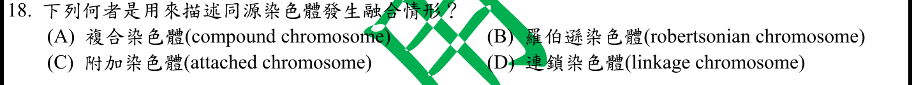
本地原卷PDF24 · 官方混科卷PDF24 · 官方原答案PDF1最下方生物表 · 釋疑PDF5
官方採計：A 原答案：A
同年度釋疑維持原答案A
主分類：Ch15 The Chromosomal Basis of Inheritance
15.4 / Alterations of Chromosome Structure
目錄行971；條目起始印刷頁307；實際目錄 PDF39
主分類理由：15.4 / Alterations of Chromosome Structure：307–308頁染色體結構改變中的融合／易位，為compound chromosome的上位且真實最小目錄。
次分類理由：無另列最小次條目；FlyBase C(1)RM同時homo_compound及attached-X；官方A保留但不把C詞族全排除。分類於結構改變，具名定義明記外部證據。
科學說明：官方A compound chromosome，111釋疑維持。Campbell沒有獨立compound名稱定義；FlyBase C(1)RM記為homo_compound，同義attached-X，兩X共用一著絲點。故compound與attached-X不互斥；公告「非所有attached chromosome皆可稱」依原文保留，不擴張成attached-X不是compound。Robertsonian等其他融合名詞不取代題設同源融合的官方用語。
來源涵蓋範圍：Campbell支援所列分類原理；具名物種地點、現代技術與科學界線由列示來源補足，實讀範圍見來源紀錄。
教材正文：印刷307／PDF356、印刷308／PDF357
補充來源：S18
另行比較：attached-X與compound是否互斥；是否可冒稱Campbell定義？
FlyBase C(1)RM同時homo_compound及attached-X；官方A保留但不把C詞族全排除。分類於結構改變，具名定義明記外部證據。
結論：證據確認，分類疑義已解決。完整覆核紀錄
Q19 · 42.3 / Blood Pressure 正式分類
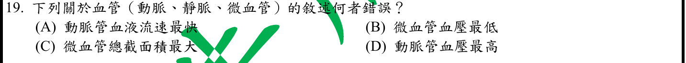
本地原卷PDF24 · 官方混科卷PDF24 · 官方原答案PDF1最下方生物表 · 已核對生物釋疑PDF4下方及5
官方採計：B 原答案：B
未列於本輪取得111生物釋疑PDF4下方及5；依同年度答案PDF1最下方生物表採計；不宣稱不存在其他未取得公告
主分類：Ch42 Circulation and Gas Exchange
42.3 / Blood Pressure
目錄行2789；條目起始印刷頁930；實際目錄 PDF46
次分類：Ch42 Circulation and Gas Exchange
42.3 / Blood Flow Velocity
目錄行2786；條目起始印刷頁930；實際目錄 PDF46
主分類理由：42.3 / Blood Pressure：931頁循環沿程壓力下降，靜脈最低，直接判斷把微血管列為最低的錯誤。
次分類理由：42.3 / Blood Flow Velocity：930–931頁總截面積最大導致微血管流速最低，必須與血壓分開。
科學說明：官方B。最低流速不等於最低血壓，微血管總截面積很大，壓力則從動脈端往靜脈端下降；同章兩最小目錄均保留。
來源涵蓋範圍：Campbell正文支援分類原理；題目限定及來源措辭差異保留於科學說明。
教材正文：印刷930／PDF979、印刷931／PDF980、印刷932／PDF981
補充來源：本題未另列課本外來源
另行比較：微血管最慢能否推出壓力最低？
同圖930–931區分流速與壓力，最低流速在微血管、最低壓力在靜脈；兩最小條目同章照存。
結論：證據確認，分類疑義已解決。完整覆核紀錄
Q20 · 45.3 / Sex Hormones 正式分類
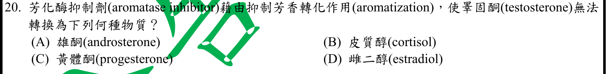
本地原卷PDF24 · 官方混科卷PDF24 · 官方原答案PDF1最下方生物表 · 已核對生物釋疑PDF4下方及5
官方採計：D 原答案：D
未列於本輪取得111生物釋疑PDF4下方及5；依同年度答案PDF1最下方生物表採計；不宣稱不存在其他未取得公告
主分類：Ch45 Hormones and the Endocrine System
45.3 / Sex Hormones
目錄行3042；條目起始印刷頁1014；實際目錄 PDF47
主分類理由：45.3 / Sex Hormones：1014頁雄激素和雌激素同屬性激素；題目特定轉換屬這個最小範圍。
次分類理由：無另列最小次條目；補讀Endotext明列testosterone→estradiol，Campbell只承擔性激素分類，底物及產物來源界線清楚。
科學說明：官方D testosterone可由aromatase轉成estradiol。Campbell此處支援性激素類別及作用，精確底物—產物由Endotext作者教材補足；不把膽固醇或所有雄激素都當作直接同一步底物。
來源涵蓋範圍：Campbell支援所列分類原理；具名物種地點、現代技術與科學界線由列示來源補足，實讀範圍見來源紀錄。
教材正文：印刷1014／PDF1063、印刷1031／PDF1080、印刷1032／PDF1081
補充來源：S20
另行比較：雌激素生合成是否由NCI一般藥物描述已足夠？
補讀Endotext明列testosterone→estradiol，Campbell只承擔性激素分類，底物及產物來源界線清楚。
結論：證據確認，分類疑義已解決。完整覆核紀錄
Q21 · 28.6 / Symbiotic Protists 正式分類
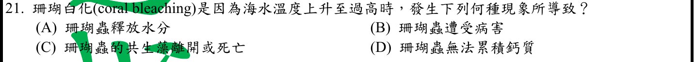
本地原卷PDF24 · 官方混科卷PDF24 · 官方原答案PDF1最下方生物表 · 已核對生物釋疑PDF4下方及5
官方採計：C 原答案：C
未列於本輪取得111生物釋疑PDF4下方及5；依同年度答案PDF1最下方生物表採計；不宣稱不存在其他未取得公告
主分類：Ch28 Protists
28.6 / Symbiotic Protists
目錄行1847；條目起始印刷頁614；實際目錄 PDF42
主分類理由：28.6 / Symbiotic Protists：615頁珊瑚與共生原生生物的關係及白化直接對應共生藻流失。
次分類理由：無另列最小次條目；615頁共生者流失直接符合C；宿主可能仍活、骨骼暴露呈白，主Symbiotic Protists無須加一般溫室效應分類。
科學說明：官方C。壓力下共生藻被排出或死亡可造成白化；白色不表示珊瑚骨骼新生變白，也不等同宿主在白化瞬間必已死亡。
來源涵蓋範圍：Campbell正文支援分類原理；題目限定及來源措辭差異保留於科學說明。
教材正文：印刷614／PDF663、印刷615／PDF664
補充來源：本題未另列課本外來源
另行比較：白化是否等於珊瑚死亡或排出水？
615頁共生者流失直接符合C；宿主可能仍活、骨骼暴露呈白，主Symbiotic Protists無須加一般溫室效應分類。
結論：證據確認，分類疑義已解決。完整覆核紀錄
Q22 · 47.1 / Cleavage 正式分類
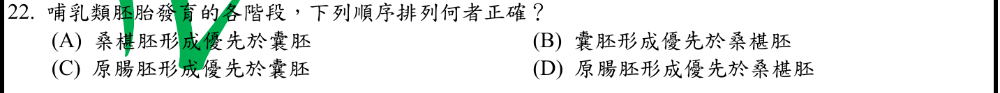
本地原卷PDF24 · 官方混科卷PDF24 · 官方原答案PDF1最下方生物表 · 已核對生物釋疑PDF4下方及5
官方採計：A 原答案：A
未列於本輪取得111生物釋疑PDF4下方及5；依同年度答案PDF1最下方生物表採計；不宣稱不存在其他未取得公告
主分類：Ch47 Animal Development
47.1 / Cleavage
目錄行3137；條目起始印刷頁1046；實際目錄 PDF48
次分類：Ch47 Animal Development
47.2 / Developmental Adaptations of Amniotes
目錄行3147；條目起始印刷頁1053；實際目錄 PDF48
次分類：Ch47 Animal Development
47.2 / Gastrulation
目錄行3144；條目起始印刷頁1049；實際目錄 PDF48
次分類：Ch46 Animal Reproduction
46.5 / Conception, Embryonic Development, and Birth
目錄行3114；條目起始印刷頁1034；實際目錄 PDF48
主分類理由：47.1 / Cleavage：1046–1048頁卵裂由合子形成細胞團，對應morula早於腔化胚泡的階段比較。
次分類理由：47.2 / Developmental Adaptations of Amniotes：1053–1054頁羊膜動物胚胎構造對比哺乳類胚泡；47.2 / Gastrulation：1049頁原腸形成晚於卵裂及囊胚階段；46.5 / Conception, Embryonic Development, and Birth：1035頁人類受精後胚胎由細胞團成為blastocyst連結題目名詞。
科學說明：官方A桑椹胚，早於胚泡、原腸胚等後續期。Campbell1035圖示細胞團進展到胚泡，未在所讀段落逐字命名morula；不偽造「Morula」最小目錄，保留卵裂及三個真實次條目。
來源涵蓋範圍：Campbell正文支援分類原理；題目限定及來源措辭差異保留於科學說明。
教材正文：印刷1035／PDF1084、印刷1046／PDF1095、印刷1047／PDF1096、印刷1048／PDF1097、印刷1049／PDF1098、印刷1053／PDF1102、印刷1054／PDF1103
補充來源：本題未另列課本外來源
另行比較：可否捏造Morula最小目錄？
實際目錄只有Cleavage等條目，1035細胞團早於blastocyst配合1046–1054發育序列；主卵裂及後期比較次目完整保存。
結論：證據確認，分類疑義已解決。完整覆核紀錄
Q23 · 43.4 / Exaggerated, Self-Directed, and Diminished Immune Responses 正式分類
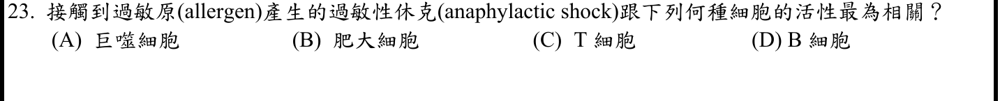
本地原卷PDF24 · 官方混科卷PDF24 · 官方原答案PDF1最下方生物表 · 已核對生物釋疑PDF4下方及5
官方採計：B 原答案：B
未列於本輪取得111生物釋疑PDF4下方及5；依同年度答案PDF1最下方生物表採計；不宣稱不存在其他未取得公告
主分類：Ch43 The Immune System
43.4 / Exaggerated, Self-Directed, and Diminished Immune Responses
目錄行2924；條目起始印刷頁970；實際目錄 PDF47
主分類理由：43.4 / Exaggerated, Self-Directed, and Diminished Immune Responses：970–971頁過敏反應的IgE結合肥大細胞並釋放組織胺，直接說明急性過敏效應。
次分類理由：無另列最小次條目；970–971急性脫顆粒的效應者是肥大細胞；B細胞為上游抗體來源，不能取代本題即時反應主軸。
科學說明：官方B mast cell。B細胞可產生抗體但不是本題即時脫顆粒效應細胞；IgE先結合受器、再次接觸抗原後交聯造成反應，不能將抗體合成與組織胺釋放混為一步。
來源涵蓋範圍：Campbell正文支援分類原理；題目限定及來源措辭差異保留於科學說明。
教材正文：印刷970／PDF1019、印刷971／PDF1020
補充來源：本題未另列課本外來源
另行比較：B細胞產IgE是否比肥大細胞更直接？
970–971急性脫顆粒的效應者是肥大細胞；B細胞為上游抗體來源，不能取代本題即時反應主軸。
結論：證據確認，分類疑義已解決。完整覆核紀錄
Q24 · 12.3 / Loss of Cell Cycle Controls in Cancer Cells 正式分類
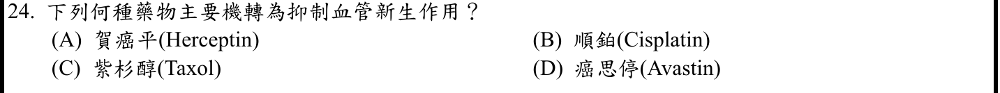
本地原卷PDF25 · 官方混科卷PDF25 · 官方原答案PDF1最下方生物表 · 已核對生物釋疑PDF4下方及5
官方採計：D 原答案：D
未列於本輪取得111生物釋疑PDF4下方及5；依同年度答案PDF1最下方生物表採計；不宣稱不存在其他未取得公告
主分類：Ch12 The Cell Cycle
12.3 / Loss of Cell Cycle Controls in Cancer Cells
目錄行792；條目起始印刷頁248；實際目錄 PDF38
次分類：Ch18 Regulation of Gene Expression
18.5 / The Multistep Model of Cancer Development
目錄行1169；條目起始印刷頁391；實際目錄 PDF40
主分類理由：12.3 / Loss of Cell Cycle Controls in Cancer Cells：249頁癌細胞誘導供應血管及治療，直接承接抑制血管新生的題目機轉。
次分類理由：18.5 / The Multistep Model of Cancer Development：392–393頁多步癌症模型與HER2標靶治療，支持Herceptin選項機轉辨別。
科學說明：官方D Avastin（bevacizumab），NCI官方說明其阻斷VEGF而抑制血管新生。Herceptin主要標靶HER2，順鉑損傷DNA，Taxol干擾微管；Campbell沒有逐一列完四藥，具名Avastin機轉以NCI補足。
來源涵蓋範圍：Campbell支援所列分類原理；具名物種地點、現代技術與科學界線由列示來源補足，實讀範圍見來源紀錄。
教材正文：印刷248／PDF297、印刷249／PDF298、印刷391／PDF440、印刷392／PDF441、印刷393／PDF442
補充來源：S24
另行比較：免疫抗體43章、癌症18章與細胞週期12章何者主？
問的是抑制腫瘤血管機轉，249頁癌細胞生長血供最直接；HER2治療在18章作次要比較，Avastin精確標的由NCI。
結論：證據確認，分類疑義已解決。完整覆核紀錄
Q25 · 18.2 / Regulation of Chromatin Structure 正式分類
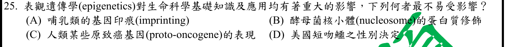
本地原卷PDF25 · 官方混科卷PDF25 · 官方原答案PDF1最下方生物表 · 已核對生物釋疑PDF4下方及5
官方採計：D 原答案：D
未列於本輪取得111生物釋疑PDF4下方及5；依同年度答案PDF1最下方生物表採計；不宣稱不存在其他未取得公告
主分類：Ch18 Regulation of Gene Expression
18.2 / Regulation of Chromatin Structure
目錄行1123；條目起始印刷頁371；實際目錄 PDF39
次分類：Ch15 The Chromosomal Basis of Inheritance
15.5 / Genomic Imprinting
目錄行981；條目起始印刷頁310；實際目錄 PDF39
次分類：Ch15 The Chromosomal Basis of Inheritance
15.2 / The Chromosomal Basis of Sex
目錄行942；條目起始印刷頁298；實際目錄 PDF39
主分類理由：18.2 / Regulation of Chromatin Structure：371–373頁染色質修飾及DNA甲基化與表觀遺傳調控是四選項共同核心。
次分類理由：15.5 / Genomic Imprinting：310–311頁基因印痕是明確表觀遺傳案例；15.2 / The Chromosomal Basis of Sex：298–299頁性別決定提供染色體與環境決定方式的比較範圍。
科學說明：官方D美國短吻鱷最不易受影響，保留採計；不能據此說溫度依賴性別決定沒有表觀遺傳。2014年原始研究已分析鱷魚SOX9與aromatase啟動子CpG甲基化的溫度差異，早於2022考試。四者「最不易」沒有題內定量標準，科學唯一性不強行補造；分類於表觀調控已明確。
來源涵蓋範圍：Campbell支援所列分類原理；具名物種地點、現代技術與科學界線由列示來源補足，實讀範圍見來源紀錄。
教材正文：印刷298／PDF347、印刷299／PDF348、印刷310／PDF359、印刷311／PDF360、印刷371／PDF420、印刷372／PDF421、印刷373／PDF422
補充來源：S25
另行比較：環境溫度決定可否排除表觀遺傳？
2014鱷魚研究早於考試，明確甲基化反例；不救四選項最不易的無量化比較，主chromatin、次imprinting與sex保留。
結論：證據確認，分類疑義已解決。完整覆核紀錄
Q26 · 6.1 / Microscopy 正式分類
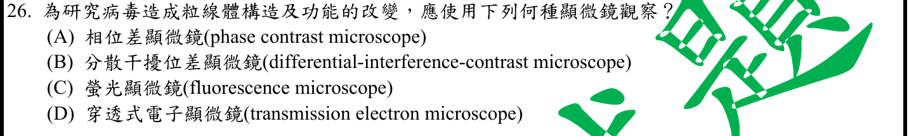
本地原卷PDF25 · 官方混科卷PDF25 · 官方原答案PDF1最下方生物表 · 釋疑PDF5
官方採計：D 原答案：D
同年度釋疑維持原答案D
主分類：Ch06 A Tour of the Cell
6.1 / Microscopy
目錄行313；條目起始印刷頁94；實際目錄 PDF36
主分類理由：6.1 / Microscopy：94–97頁顯微鏡解析度、TEM內部超微構造及活細胞方法限制，完整涵蓋比較目的。
次分類理由：無另列最小次條目；96頁電子顯微鏡固定與死亡限制否定過度推論，螢光方法可研究功能；官方D限超微結構選擇，題文構造及功能兩詞均保存。
科學說明：官方D TEM，釋疑以足夠解析度維持。原題同時寫「構造及功能」，TEM可看固定樣本超微結構，不能直接量測活粒線體功能；螢光顯微鏡配合探針可做活細胞功能研究，超解析能力亦須依方法界定。選D依精細構造的命題口徑，不將「唯有D」推廣為功能實驗唯一方法。
來源涵蓋範圍：Campbell正文支援分類原理；題目限定及來源措辭差異保留於科學說明。
教材正文：印刷94／PDF143、印刷95／PDF144、印刷96／PDF145、印刷97／PDF146
補充來源：本題未另列課本外來源
另行比較：以TEM解析度能否推出也能直接看活體功能？
96頁電子顯微鏡固定與死亡限制否定過度推論，螢光方法可研究功能；官方D限超微結構選擇，題文構造及功能兩詞均保存。
結論：證據確認，分類疑義已解決。完整覆核紀錄
Q27 · 8.4 / Effects of Local Conditions on Enzyme Activity 正式分類
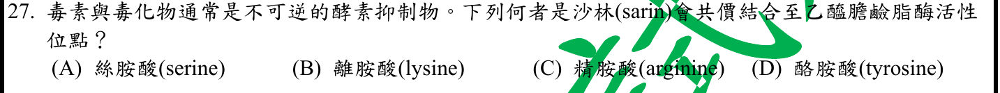
本地原卷PDF25 · 官方混科卷PDF25 · 官方原答案PDF1最下方生物表 · 已核對生物釋疑PDF4下方及5
官方採計：A 原答案：A
未列於本輪取得111生物釋疑PDF4下方及5；依同年度答案PDF1最下方生物表採計；不宣稱不存在其他未取得公告
主分類：Ch08 An Introduction to Metabolism
8.4 / Effects of Local Conditions on Enzyme Activity
目錄行529；條目起始印刷頁157；實際目錄 PDF37
次分類：Ch48 Neurons, Synapses, and Signaling
48.4 / Termination of Neurotransmitter Signaling
目錄行3225；條目起始印刷頁1079；實際目錄 PDF48
主分類理由：8.4 / Effects of Local Conditions on Enzyme Activity：158頁在酵素活性受局部條件影響段落直接寫sarin與乙醯膽鹼酯酶活性位點serine共價結合。
次分類理由：48.4 / Termination of Neurotransmitter Signaling：1079頁神經傳導物質終止機制補足AChE遭抑制後的突觸影響。
科學說明：官方A serine；以本地正文具名直接證據判定。原題「乙醯膽鹼脂酶」照存，正確酵素名稱為乙醯膽鹼酯酶。不將一般不可逆抑制與所有毒素作用劃等號。
來源涵蓋範圍：Campbell正文支援分類原理；題目限定及來源措辭差異保留於科學說明。
教材正文：印刷157／PDF206、印刷158／PDF207、印刷159／PDF208、印刷1079／PDF1128、印刷1080／PDF1129
補充來源：本題未另列課本外來源
另行比較：神經傳導48章或酵素抑制8章？
158頁直接具名sarin-serine共價鍵，故主酵素活性抑制、次傳導物質終止，不因毒物作用器官倒置主次。
結論：證據確認，分類疑義已解決。完整覆核紀錄
Q28 · 11.3 / Small Molecules and Ions as Second Messengers 正式分類
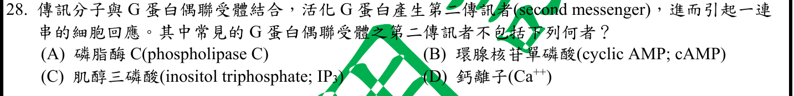
本地原卷PDF25 · 官方混科卷PDF25 · 官方原答案PDF1最下方生物表 · 已核對生物釋疑PDF4下方及5
官方採計：A 原答案：A
未列於本輪取得111生物釋疑PDF4下方及5；依同年度答案PDF1最下方生物表採計；不宣稱不存在其他未取得公告
主分類：Ch11 Cell Communication
11.3 / Small Molecules and Ions as Second Messengers
文字目錄漏Ions as；本輪PDF38目錄與223正文均為Small Molecules and Ions as Second Messengers。原文字檔保留。 目錄行724；條目起始印刷頁223；實際目錄 PDF38
次分類：Ch11 Cell Communication
11.2 / Receptors in the Plasma Membrane
目錄行708；條目起始印刷頁217；實際目錄 PDF38
主分類理由：11.3 / Small Molecules and Ions as Second Messengers：223–225頁第二傳訊者cAMP、IP3與Ca2+和產生它們的酵素區分，直接回答排除項。
次分類理由：11.2 / Receptors in the Plasma Membrane：217–219頁膜上GPCR活化G蛋白是上游來源，同章另存。
科學說明：官方A phospholipase C是酵素，可切割磷脂生成IP3等，並非第二傳訊者。真實PDF38目錄作Small Molecules and Ions as Second Messengers，文字目錄漏Ions as；本輪年度條目保留別名與差異，未改原檔。
來源涵蓋範圍：Campbell正文支援分類原理；題目限定及來源措辭差異保留於科學說明。
教材正文：印刷217／PDF266、印刷218／PDF267、印刷219／PDF268、印刷223／PDF272、印刷224／PDF273、印刷225／PDF274
補充來源：本題未另列課本外來源
另行比較：PLC是下游活化分子是否就是第二傳訊者？
酵素與小分子／離子分工清楚，223–225支持A；PDF38真實目錄補Ions as且原文字檔不變。
結論：證據確認，分類疑義已解決。完整覆核紀錄
Q29 · 16.3 / A chromosome consists of a DNA molecule packed together with proteins 正式分類
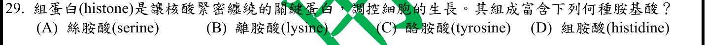
本地原卷PDF25 · 官方混科卷PDF25 · 官方原答案PDF1最下方生物表 · 已核對生物釋疑PDF4下方及5
官方採計：B 原答案：B
未列於本輪取得111生物釋疑PDF4下方及5；依同年度答案PDF1最下方生物表採計；不宣稱不存在其他未取得公告
主分類：Ch16 The Molecular Basis of Inheritance
16.3 / A chromosome consists of a DNA molecule packed together with proteins
目錄行1022；條目起始印刷頁330；實際目錄 PDF39
主分類理由：16.3 / A chromosome consists of a DNA molecule packed together with proteins：330頁DNA與組蛋白包裝，直接列lysine和arginine側鏈正電與DNA磷酸負電吸引。
次分類理由：無另列最小次條目；真實16.3無更小目錄；330頁富lysine/arginine直接支持B，使用Concept層而不冒造最小節。
科學說明：官方B lysine。Concept16.3在真實目錄沒有下一層條目，所以使用概念本身，不另造Histones；histidine同屬可帶正電胺基酸不代表是本題組蛋白富含的最佳選項。
來源涵蓋範圍：Campbell正文支援分類原理；題目限定及來源措辭差異保留於科學說明。
教材正文：印刷330／PDF379、印刷331／PDF380
補充來源：本題未另列課本外來源
另行比較：可否使用自行建立Histones葉節點？
真實16.3無更小目錄；330頁富lysine/arginine直接支持B，使用Concept層而不冒造最小節。
結論：證據確認，分類疑義已解決。完整覆核紀錄
Q30 · 23.2 / The Hardy-Weinberg Equation 正式分類
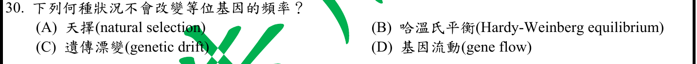
本地原卷PDF25 · 官方混科卷PDF25 · 官方原答案PDF1最下方生物表 · 已核對生物釋疑PDF4下方及5
官方採計：B 原答案：B
未列於本輪取得111生物釋疑PDF4下方及5；依同年度答案PDF1最下方生物表採計；不宣稱不存在其他未取得公告
主分類：Ch23 The Evolution of Populations
23.2 / The Hardy-Weinberg Equation
目錄行1445；條目起始印刷頁490；實際目錄 PDF41
主分類理由：23.2 / The Hardy-Weinberg Equation：490–492頁哈溫平衡假設及等位頻率保持，直接回答不發生等位基因頻率改變的狀態。
次分類理由：無另列最小次條目；490–492假設成立才保持頻率，單一樣本比例不能作永續證明；最小哈溫方程式涵蓋假設。
科學說明：官方B。在沒有突變、選汰、漂變、基因流等假設下p、q不變；一個時間點的基因型比例符合p²:2pq:q²，不能單憑此證明未來必永遠平衡。
來源涵蓋範圍：Campbell正文支援分類原理；題目限定及來源措辭差異保留於科學說明。
教材正文：印刷490／PDF539、印刷491／PDF540、印刷492／PDF541
補充來源：本題未另列課本外來源
另行比較：看到哈溫比例是否足以證明沒有演化？
490–492假設成立才保持頻率，單一樣本比例不能作永續證明；最小哈溫方程式涵蓋假設。
結論：證據確認，分類疑義已解決。完整覆核紀錄
Q31 · 27.4 / Bacteria 正式分類
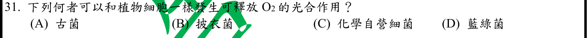
本地原卷PDF25 · 官方混科卷PDF25 · 官方原答案PDF1最下方生物表 · 已核對生物釋疑PDF4下方及5
官方採計：D 原答案：D
未列於本輪取得111生物釋疑PDF4下方及5；依同年度答案PDF1最下方生物表採計；不宣稱不存在其他未取得公告
主分類：Ch27 Bacteria and Archaea
27.4 / Bacteria
目錄行1751；條目起始印刷頁583；實際目錄 PDF42
主分類理由：27.4 / Bacteria：584頁細菌類群中的cyanobacteria直接執行產氧光合作用；目錄最小條目為Bacteria。
次分類理由：無另列最小次條目；584頁cyanobacteria明確產氧，化學自營與古菌不符題設；真實目錄Bacteria無更細Cyanobacteria葉。
科學說明：官方D藍綠菌。利用水作電子來源並釋O2，與植物葉綠體關係一致；化學自營依化學氧化取能，不因能自營便等同產氧光合作用。
來源涵蓋範圍：Campbell正文支援分類原理；題目限定及來源措辭差異保留於科學說明。
教材正文：印刷583／PDF632、印刷584／PDF633、印刷585／PDF634
補充來源：本題未另列課本外來源
另行比較：自營是否等同光合作用、光合作用是否都釋氧？
584頁cyanobacteria明確產氧，化學自營與古菌不符題設；真實目錄Bacteria無更細Cyanobacteria葉。
結論：證據確認，分類疑義已解決。完整覆核紀錄
Q32 · 31.1 / Body Structure 正式分類
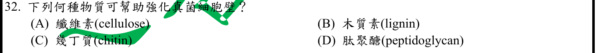
本地原卷PDF25 · 官方混科卷PDF25 · 官方原答案PDF1最下方生物表 · 已核對生物釋疑PDF4下方及5
官方採計：C 原答案：C
未列於本輪取得111生物釋疑PDF4下方及5；依同年度答案PDF1最下方生物表採計；不宣稱不存在其他未取得公告
主分類：Ch31 Fungi
31.1 / Body Structure
目錄行1969；條目起始印刷頁655；實際目錄 PDF43
次分類：Ch05 The Structure and Function of Large Biological Molecules
5.2 / Polysaccharides
目錄行242；條目起始印刷頁70；實際目錄 PDF36
主分類理由：31.1 / Body Structure：656頁真菌體構造明列chitin細胞壁，直接辨識所問生物結構。
次分類理由：5.2 / Polysaccharides：72頁幾丁質作結構性多醣，補足物質性質及與植物纖維素的差異。
科學說明：官方C幾丁質。纖維素及木質素典型於植物壁，肽聚醣典型於細菌壁；不把類真菌卵菌與真菌混為一類而更改答案。
來源涵蓋範圍：Campbell正文支援分類原理；題目限定及來源措辭差異保留於科學說明。
教材正文：印刷71／PDF120、印刷72／PDF121、印刷655／PDF704、印刷656／PDF705
補充來源：本題未另列課本外來源
另行比較：植物壁、細菌壁或卵菌可否代換真菌？
656頁真菌chitin主證，72頁多醣次證；具名真菌情境優先，沒有把表面相似群等同分類。
結論：證據確認，分類疑義已解決。完整覆核紀錄
Q33 · 31.3 / The Origin of Fungi 正式分類
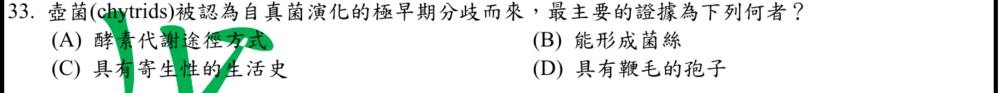
本地原卷PDF25 · 官方混科卷PDF25 · 官方原答案PDF1最下方生物表 · 已核對生物釋疑PDF4下方及5
官方採計：D 原答案：D
未列於本輪取得111生物釋疑PDF4下方及5；依同年度答案PDF1最下方生物表採計；不宣稱不存在其他未取得公告
主分類：Ch31 Fungi
31.3 / The Origin of Fungi
目錄行1989；條目起始印刷頁659；實際目錄 PDF43
次分類：Ch31 Fungi
31.4 / Fungi have radiated into a diverse set of lineages
目錄行1995；條目起始印刷頁660；實際目錄 PDF43
主分類理由：31.3 / The Origin of Fungi：659頁真菌祖先與鞭毛性狀支持壺菌保留祖徵的比較，是題目演化推論主軸。
次分類理由：31.4 / Fungi have radiated into a diverse set of lineages：661–662頁真菌多樣譜系及壺菌實際內容補足具名群，該Concept沒有壺菌目錄子條目。
科學說明：官方D具鞭毛孢子。現行12e亦列Cryptomycetes、Microsporidians等很早分支，不能說壺菌是唯一最早或所有早期真菌都具鞭毛；題目問支持早期分歧的祖徵而非完整排序。
來源涵蓋範圍：Campbell正文支援分類原理；題目限定及來源措辭差異保留於科學說明。
教材正文：印刷659／PDF708、印刷660／PDF709、印刷661／PDF710、印刷662／PDF711
補充來源：本題未另列課本外來源
另行比較：壺菌是否可稱唯一最基部分支？
659–662同時載更早分支與鞭毛祖徵，原「極早期」仍可理解；主Origin，次31.4，沒有偽造Chytrids目錄條目。
結論：證據確認，分類疑義已解決。完整覆核紀錄
Q34 · 33.3 / Rotifers and Acanthocephalans 正式分類
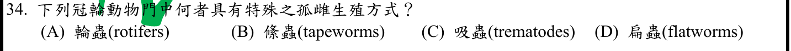
本地原卷PDF25 · 官方混科卷PDF25 · 官方原答案PDF1最下方生物表 · 已核對生物釋疑PDF4下方及5
官方採計：A 原答案：A
未列於本輪取得111生物釋疑PDF4下方及5；依同年度答案PDF1最下方生物表採計；不宣稱不存在其他未取得公告
主分類：Ch33 An Introduction to Invertebrates
33.3 / Rotifers and Acanthocephalans
目錄行2114；條目起始印刷頁697；實際目錄 PDF44
主分類理由：33.3 / Rotifers and Acanthocephalans：697頁輪蟲未受精卵發育成雌體的孤雌生殖明確符合，真實條目為Rotifers and Acanthocephalans。
次分類理由：無另列最小次條目；697頁同時列其他動物也可孤雌，官方A限所給比較；Rotifers and Acanthocephalans為PDF44實際題名。
科學說明：官方A輪蟲。此生殖方式不是輪蟲獨有；原題選項絛蟲、吸蟲又屬扁蟲，分類層級不平行，原題照留。
來源涵蓋範圍：Campbell正文支援分類原理；題目限定及來源措辭差異保留於科學說明。
教材正文：印刷697／PDF746、印刷698／PDF747
補充來源：本題未另列課本外來源
另行比較：孤雌生殖是否只輪蟲具有？
697頁同時列其他動物也可孤雌，官方A限所給比較；Rotifers and Acanthocephalans為PDF44實際題名。
結論：證據確認，分類疑義已解決。完整覆核紀錄
Q35 · 33.5 / Echinoderms 正式分類
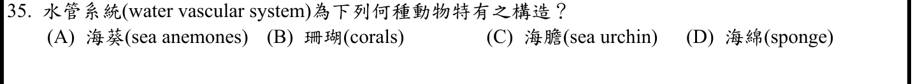
本地原卷PDF25 · 官方混科卷PDF25 · 官方原答案PDF1最下方生物表 · 已核對生物釋疑PDF4下方及5
官方採計：C 原答案：C
未列於本輪取得111生物釋疑PDF4下方及5；依同年度答案PDF1最下方生物表採計；不宣稱不存在其他未取得公告
主分類：Ch33 An Introduction to Invertebrates
33.5 / Echinoderms
目錄行2140；條目起始印刷頁713；實際目錄 PDF44
主分類理由：33.5 / Echinoderms：713–714頁棘皮動物水管系統及管足直接對應海膽。
次分類理由：無另列最小次條目；713頁echinoderm water vascular和管足專門結構，海膽符合，非所有過水的體腔都同源水管系統。
科學說明：官方C海膽。水管系統為棘皮動物特徵，不是海綿的水流孔道或刺胞動物胃循環腔；「特有」指所屬類群，非只有海膽單一物種具有。
來源涵蓋範圍：Campbell正文支援分類原理；題目限定及來源措辭差異保留於科學說明。
教材正文：印刷713／PDF762、印刷714／PDF763、印刷715／PDF764
補充來源：本題未另列課本外來源
另行比較：海綿水流通道是否即水管系統？
713頁echinoderm water vascular和管足專門結構，海膽符合，非所有過水的體腔都同源水管系統。
結論：證據確認，分類疑義已解決。完整覆核紀錄
Q36 · 40.1 / Hierarchical Organization of Body Plans 正式分類
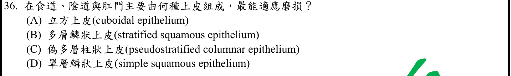
本地原卷PDF26 · 官方混科卷PDF26 · 官方原答案PDF1最下方生物表 · 已核對生物釋疑PDF4下方及5
官方採計：B 原答案：B
未列於本輪取得111生物釋疑PDF4下方及5；依同年度答案PDF1最下方生物表採計；不宣稱不存在其他未取得公告
主分類：Ch40 Basic Principles of Animal Form and Function
40.1 / Hierarchical Organization of Body Plans
目錄行2623；條目起始印刷頁876；實際目錄 PDF46
主分類理由：40.1 / Hierarchical Organization of Body Plans：877頁組織圖的多層鱗狀上皮與防止磨損位置，位於Hierarchical Organization of Body Plans。
次分類理由：無另列最小次條目；實問耐磨上皮形態與功能，877頁組織圖及真實最小Hierarchical Organization較直接，無須另造上皮葉節點。
科學說明：官方B。多層細胞能抵抗磨損，單層鱗狀偏向薄層交換。部位交界可轉變，不把整段消化道全說成同一上皮；真實目錄未另列Epithelial Tissue。
來源涵蓋範圍：Campbell正文支援分類原理；題目限定及來源措辭差異保留於科學說明。
教材正文：印刷876／PDF925、印刷877／PDF926、印刷878／PDF927
補充來源：本題未另列課本外來源
另行比較：是否因題問食道就主歸動物消化？
實問耐磨上皮形態與功能，877頁組織圖及真實最小Hierarchical Organization較直接，無須另造上皮葉節點。
結論：證據確認，分類疑義已解決。完整覆核紀錄
Q37 · 14.4 / Dominantly Inherited Disorders 正式分類
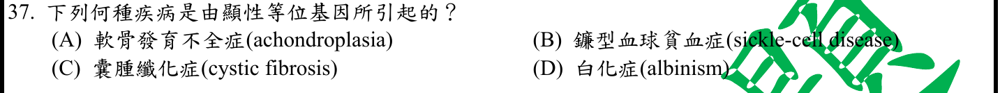
本地原卷PDF26 · 官方混科卷PDF26 · 官方原答案PDF1最下方生物表 · 已核對生物釋疑PDF4下方及5
官方採計：A 原答案：A
未列於本輪取得111生物釋疑PDF4下方及5；依同年度答案PDF1最下方生物表採計；不宣稱不存在其他未取得公告
主分類：Ch14 Mendel and the Gene Idea
14.4 / Dominantly Inherited Disorders
目錄行914；條目起始印刷頁287；實際目錄 PDF38
主分類理由：14.4 / Dominantly Inherited Disorders：287頁achondroplasia直接列為顯性遺傳疾病，是精確最小條目。
次分類理由：無另列最小次條目；287頁achondroplasia明確顯性疾病，分子血紅素共顯性與臨床病的判讀層級分開。
科學說明：官方A。常見異型合子呈軟骨發育不全，同型顯性有致死效應；鐮型血球疾病臨床常以隱性模式描述，但血紅素分子層級可共顯性，不混用觀察層級。
來源涵蓋範圍：Campbell正文支援分類原理；題目限定及來源措辭差異保留於科學說明。
教材正文：印刷285／PDF334、印刷286／PDF335、印刷287／PDF336
補充來源：本題未另列課本外來源
另行比較：鐮刀型血紅素共顯性是否推翻題目的顯性疾病？
287頁achondroplasia明確顯性疾病，分子血紅素共顯性與臨床病的判讀層級分開。
結論：證據確認，分類疑義已解決。完整覆核紀錄
Q38 · 46.4 / Hormonal Control of Female Reproductive Cycles 正式分類
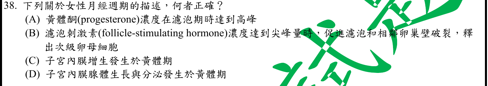
本地原卷PDF26 · 官方混科卷PDF26 · 官方原答案PDF1最下方生物表 · 釋疑PDF5
官方採計：D 原答案：D
同年度釋疑維持原答案D
主分類：Ch46 Animal Reproduction
46.4 / Hormonal Control of Female Reproductive Cycles
目錄行3104；條目起始印刷頁1032；實際目錄 PDF48
主分類理由：46.4 / Hormonal Control of Female Reproductive Cycles：1032–1034頁女性週期的卵巢與子宮事件、LH峰及黃體酮，直接對應四敘述。
次分類理由：無另列最小次條目；增生期主增生、黃體期腺體分泌是命題區分；仍有內膜維持發育，保留官方D與用語界線。1032–1034直接支持同一最小條目。
科學說明：官方D，釋疑維持。黃體期對應子宮分泌期，腺體生長分泌；LH峰為促進排卵關鍵，不是把FSH峰當唯一觸發。大量增生主要在增生期，黃體期仍有內膜維持與發育，不能將官方區分解讀為黃體期完全不再生長。公告引用第8版不冒充本輪12e頁碼。
來源涵蓋範圍：Campbell正文支援分類原理；題目限定及來源措辭差異保留於科學說明。
教材正文：印刷1032／PDF1081、印刷1033／PDF1082、印刷1034／PDF1083
補充來源：本題未另列課本外來源
另行比較：C增生發生於黃體期是否可說完全錯？
增生期主增生、黃體期腺體分泌是命題區分；仍有內膜維持發育，保留官方D與用語界線。1032–1034直接支持同一最小條目。
結論：證據確認，分類疑義已解決。完整覆核紀錄
Q39 · 49.2 / Arousal and Sleep 正式分類
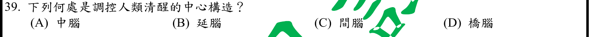
本地原卷PDF26 · 官方混科卷PDF26 · 官方原答案PDF1最下方生物表 · 釋疑PDF5
官方採計：A 原答案：A
同年度釋疑維持原答案A
主分類：Ch49 Nervous Systems
49.2 / Arousal and Sleep
目錄行3255；條目起始印刷頁1094；實際目錄 PDF48
主分類理由：49.2 / Arousal and Sleep：1094頁清醒與睡眠由網狀結構、下視丘等調控，題目主軸是Arousal and Sleep而非單純腦區命名。
次分類理由：無另列最小次條目；1094頁主要中腦和橋腦的網狀結構、Neuron2010下視丘喚醒支路支持分布網路；VLPO促眠不能外推整個下視丘。
科學說明：官方A中腦，釋疑以VLPO促眠作說明。Campbell1094頁網狀結構主要位於中腦與橋腦，清醒屬分布網路；公告所引Neuron2010圖1亦列下視丘orexin參與喚醒。VLPO促眠不能推出整個間腦不參與清醒，故不強行證成A排他的唯一中心。
來源涵蓋範圍：Campbell支援所列分類原理；具名物種地點、現代技術與科學界線由列示來源補足，實讀範圍見來源紀錄。
教材正文：印刷1091／PDF1140、印刷1092／PDF1141、印刷1093／PDF1142、印刷1094／PDF1143、印刷1095／PDF1144
補充來源：S39
另行比較：中腦單一中心能否排除橋腦與間腦？
1094頁主要中腦和橋腦的網狀結構、Neuron2010下視丘喚醒支路支持分布網路；VLPO促眠不能外推整個下視丘。
結論：證據確認，分類疑義已解決。完整覆核紀錄
Q40 · 50.3 / The Vertebrate Visual System 正式分類
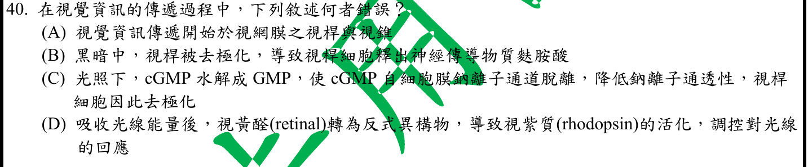
本地原卷PDF26 · 官方混科卷PDF26 · 官方原答案PDF1最下方生物表 · 已核對生物釋疑PDF4下方及5
官方採計：C 原答案：C
未列於本輪取得111生物釋疑PDF4下方及5；依同年度答案PDF1最下方生物表採計；不宣稱不存在其他未取得公告
主分類：Ch50 Sensory and Motor Mechanisms
50.3 / The Vertebrate Visual System
目錄行3364；條目起始印刷頁1119；實際目錄 PDF49
主分類理由：50.3 / The Vertebrate Visual System：1120–1121頁視桿光轉導及突觸活動，直接判定cGMP下降後膜電位方向。
次分類理由：無另列最小次條目；1121圖50.19光照rod hyperpolarized，完整C前半機制正確、末端電位方向錯；分類The Vertebrate Visual System確認。
科學說明：官方C為錯誤敘述。光使通道關閉、Na+內流下降，視桿超極化且減少glutamate釋放；黑暗較去極化。原C最後寫「去極化」保留，不改題以消除錯項。
來源涵蓋範圍：Campbell正文支援分類原理；題目限定及來源措辭差異保留於科學說明。
教材正文：印刷1119／PDF1168、印刷1120／PDF1169、印刷1121／PDF1170、印刷1122／PDF1171
補充來源：本題未另列課本外來源
另行比較：光後Na通道關閉是去極化或超極化？
1121圖50.19光照rod hyperpolarized，完整C前半機制正確、末端電位方向錯；分類The Vertebrate Visual System確認。
結論：證據確認，分類疑義已解決。完整覆核紀錄
Q41 · 18.2 / Mechanisms of Post-transcriptional Regulation 正式分類
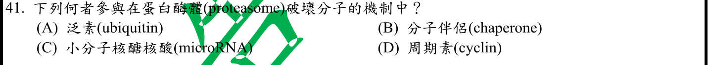
本地原卷PDF26 · 官方混科卷PDF26 · 官方原答案PDF1最下方生物表 · 已核對生物釋疑PDF4下方及5
官方採計：A 原答案：A
未列於本輪取得111生物釋疑PDF4下方及5；依同年度答案PDF1最下方生物表採計；不宣稱不存在其他未取得公告
主分類：Ch18 Regulation of Gene Expression
18.2 / Mechanisms of Post-transcriptional Regulation
目錄行1129；條目起始印刷頁377；實際目錄 PDF39
主分類理由：18.2 / Mechanisms of Post-transcriptional Regulation：379頁蛋白降解控制位於Mechanisms of Post-transcriptional Regulation，泛素標記送入蛋白酶體。
次分類理由：無另列最小次條目；379頁泛素為標記，週期素為可能底物；主轉譯後蛋白量調控最小範圍，未當成細胞週期識別題。
科學說明：官方A ubiquitin。cyclin可為受調控降解的標的，不是本題一般標記；chaperone的折疊及miRNA調節RNA作用不同。泛素是常見機制，不宣稱所有蛋白酶體底物都絕對需要泛素。
來源涵蓋範圍：Campbell正文支援分類原理；題目限定及來源措辭差異保留於科學說明。
教材正文：印刷377／PDF426、印刷378／PDF427、印刷379／PDF428
補充來源：本題未另列課本外來源
另行比較：週期素也是蛋白酶體標的是否可取代泛素？
379頁泛素為標記，週期素為可能底物；主轉譯後蛋白量調控最小範圍，未當成細胞週期識別題。
結論：證據確認，分類疑義已解決。完整覆核紀錄
Q42 · 9.6 / The Versatility of Catabolism 正式分類
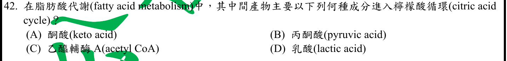
本地原卷PDF26 · 官方混科卷PDF26 · 官方原答案PDF1最下方生物表 · 已核對生物釋疑PDF4下方及5
官方採計：C 原答案：C
未列於本輪取得111生物釋疑PDF4下方及5；依同年度答案PDF1最下方生物表採計；不宣稱不存在其他未取得公告
主分類：Ch09 Cellular Respiration and Fermentation
9.6 / The Versatility of Catabolism
目錄行608；條目起始印刷頁182；實際目錄 PDF37
主分類理由：9.6 / The Versatility of Catabolism：183頁β氧化將脂肪酸分解為acetyl-CoA，連接檸檬酸循環，直接匹配最小代謝分解條目。
次分類理由：無另列最小次條目；183頁β氧化直接產acetyl-CoA，不借用醣解路徑；「主要」保留奇數碳鏈尾端差異。
科學說明：官方C。主要以乙醯輔酶A進入，不需先變成丙酮酸；題目「主要」保留，未宣稱奇數碳鏈最後片段也全為二碳。
來源涵蓋範圍：Campbell正文支援分類原理；題目限定及來源措辭差異保留於科學說明。
教材正文：印刷182／PDF231、印刷183／PDF232
補充來源：本題未另列課本外來源
另行比較：脂肪酸是否要先轉丙酮酸進TCA？
183頁β氧化直接產acetyl-CoA，不借用醣解路徑；「主要」保留奇數碳鏈尾端差異。
結論：證據確認，分類疑義已解決。完整覆核紀錄
Q43 · 44.4 / From Blood Filtrate to Urine: A Closer Look 正式分類
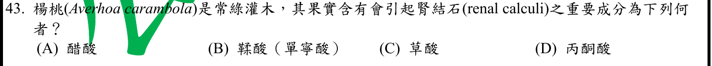
本地原卷PDF26 · 官方混科卷PDF26 · 官方原答案PDF1最下方生物表 · 已核對生物釋疑PDF4下方及5
官方採計：C 原答案：C
未列於本輪取得111生物釋疑PDF4下方及5；依同年度答案PDF1最下方生物表採計；不宣稱不存在其他未取得公告
主分類：Ch44 Osmoregulation and Excretion
44.4 / From Blood Filtrate to Urine: A Closer Look
目錄行2974；條目起始印刷頁987；實際目錄 PDF47
主分類理由：44.4 / From Blood Filtrate to Urine: A Closer Look：986–989頁腎元濾液、尿液濃縮及溶質處理，為腎內草酸鹽沉積情境最接近的真實最小條目。
次分類理由：無另列最小次條目；病例提供草酸沉積證據但不能推普遍風險；Campbell腎處理原理與具名楊桃病因分開，原學名拼寫不默改。
科學說明：官方C草酸。楊桃病例研究有草酸鹽腎病與結晶沉積證據；腎小管結晶損傷不等於所有病例已形成肉眼腎結石，也不表示食用必然結石。Campbell此段沒有具名楊桃或草酸結石詳論，疾病因果由補充來源支持。原學名Averhoa照留，科學名稱應為Averrhoa carambola。
來源涵蓋範圍：Campbell支援所列分類原理；具名物種地點、現代技術與科學界線由列示來源補足，實讀範圍見來源紀錄。
教材正文：印刷986／PDF1035、印刷987／PDF1036、印刷988／PDF1037、印刷989／PDF1038
補充來源：S43
另行比較：草酸鹽腎病研究能否說所有人食楊桃必結石？
病例提供草酸沉積證據但不能推普遍風險；Campbell腎處理原理與具名楊桃病因分開，原學名拼寫不默改。
結論：證據確認，分類疑義已解決。完整覆核紀錄
Q44 · 7.1 / Cellular membranes are fluid mosaics of lipids and proteins 正式分類
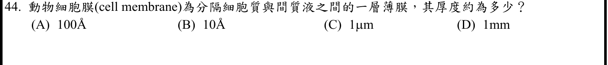
本地原卷PDF26 · 官方混科卷PDF26 · 官方原答案PDF1最下方生物表 · 已核對生物釋疑PDF4下方及5
官方採計：A 原答案：A
未列於本輪取得111生物釋疑PDF4下方及5；依同年度答案PDF1最下方生物表採計；不宣稱不存在其他未取得公告
主分類：Ch07 Membrane Structure and Function
7.1 / Cellular membranes are fluid mosaics of lipids and proteins
目錄行407；條目起始印刷頁127；實際目錄 PDF36
主分類理由：7.1 / Cellular membranes are fluid mosaics of lipids and proteins：126–129頁生物膜的脂質雙層／蛋白結構是厚度尺度判斷的目錄範圍；無更小條目專論通用膜厚。
次分類理由：無另列最小次條目；重新檢索及段落未見本地定數，改由Alberts約5nm支持量級；獨立換算A10nm、B1nm、C1000nm、D10^6nm，不冒稱Campbell7–8nm。
科學說明：官方A 100Å＝10nm為選項中最合適量級，10Å僅1nm，1µm為1000nm，1mm為10^6nm。Campbell本輪所讀頁未找到統一膜厚數字；Alberts作者教材寫脂質雙層約5nm，支持奈米量級，不應聲稱所有動物膜精確100Å或偽引Campbell給7–8nm。
來源涵蓋範圍：Campbell支援所列分類原理；具名物種地點、現代技術與科學界線由列示來源補足，實讀範圍見來源紀錄。
教材正文：印刷97／PDF146、印刷98／PDF147、印刷126／PDF175、印刷127／PDF176、印刷128／PDF177、印刷129／PDF178
補充來源：S44
另行比較：100Å是否精確普適；本地書有沒有厚度數字？
重新檢索及段落未見本地定數，改由Alberts約5nm支持量級；獨立換算A10nm、B1nm、C1000nm、D10^6nm，不冒稱Campbell7–8nm。
結論：證據確認，分類疑義已解決。完整覆核紀錄
Q45 · 27.2 / Genetic Recombination 正式分類
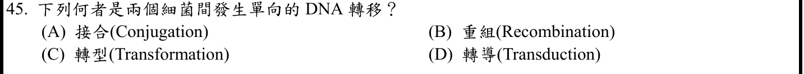
本地原卷PDF27 · 官方混科卷PDF27 · 官方原答案PDF1最下方生物表 · 釋疑PDF5
官方採計：A 原答案：A
同年度釋疑維持原答案A
主分類：Ch27 Bacteria and Archaea
27.2 / Genetic Recombination
目錄行1728；條目起始印刷頁579；實際目錄 PDF42
主分類理由：27.2 / Genetic Recombination：579–581頁Genetic Recombination下直接區分轉型、轉導與接合的供受菌關係。
次分類理由：無另列最小次條目；579–581頁供受者與載體比較：接合直接接觸、轉型攝裸DNA、轉導噬菌體介導，官方A保留而公告簡化不可當完整定義。
科學說明：官方A接合，釋疑維持。接合需要兩細菌直接接觸並由供菌向受菌傳遞DNA；原題只說單向，未明寫直接接觸，轉型／轉導也能促成細菌來源DNA傳遞。公告將其概括成病毒與細菌的描述不能套到轉型，保留原解釋與精確區別。
來源涵蓋範圍：Campbell正文支援分類原理；題目限定及來源措辭差異保留於科學說明。
教材正文：印刷579／PDF628、印刷580／PDF629、印刷581／PDF630
補充來源：本題未另列課本外來源
另行比較：轉型與轉導是否不是細菌間DNA轉移？
579–581頁供受者與載體比較：接合直接接觸、轉型攝裸DNA、轉導噬菌體介導，官方A保留而公告簡化不可當完整定義。
結論：證據確認，分類疑義已解決。完整覆核紀錄
Q46 · 50.5 / Vertebrate Skeletal Muscle 正式分類
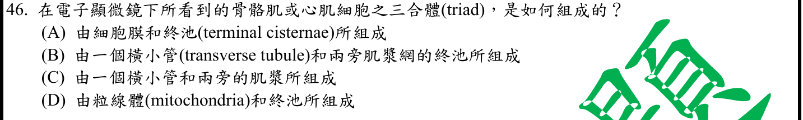
本地原卷PDF27 · 官方混科卷PDF27 · 官方原答案PDF1最下方生物表 · 已核對生物釋疑PDF4下方及5
官方採計：B 原答案：B
未列於本輪取得111生物釋疑PDF4下方及5；依同年度答案PDF1最下方生物表採計；不宣稱不存在其他未取得公告
主分類：Ch50 Sensory and Motor Mechanisms
50.5 / Vertebrate Skeletal Muscle
目錄行3381；條目起始印刷頁1126；實際目錄 PDF49
次分類：Ch50 Sensory and Motor Mechanisms
50.5 / Other Types of Muscle
目錄行3384；條目起始印刷頁1131；實際目錄 PDF49
主分類理由：50.5 / Vertebrate Skeletal Muscle：1128–1130頁骨骼肌T小管與肌漿網鈣釋放結構直接對應三合體組成。
次分類理由：50.5 / Other Types of Muscle：1131頁其他肌肉類型支持心肌與骨骼肌的差異，原題寫兩者因此不能省去。
科學說明：官方B：一條T小管加兩側肌漿網終池是骨骼肌triad。原題「骨骼肌或心肌」不精確，心肌常見一T小管配一SR的dyad；作者肌肉研究綜述圖1直接比較。主次最小條目同章保留，不改原題或說心肌通常也是三合體。
來源涵蓋範圍：Campbell支援所列分類原理；具名物種地點、現代技術與科學界線由列示來源補足，實讀範圍見來源紀錄。
教材正文：印刷1128／PDF1177、印刷1129／PDF1178、印刷1130／PDF1179、印刷1131／PDF1180
補充來源：S46
另行比較：心肌三合體的措辭是否需忽略？
2008作者綜述圖1明確skeletal triad／cardiac dyad，兩類肌肉最小目錄同章均留；原「或心肌」的範圍差異不能刪除。
結論：證據確認，分類疑義已解決。完整覆核紀錄
Q47 · 49.1 / The Peripheral Nervous System 正式分類
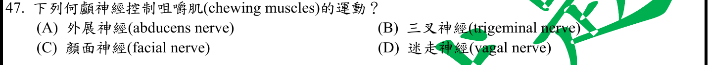
本地原卷PDF27 · 官方混科卷PDF27 · 官方原答案PDF1最下方生物表 · 已核對生物釋疑PDF4下方及5
官方採計：B 原答案：B
未列於本輪取得111生物釋疑PDF4下方及5；依同年度答案PDF1最下方生物表採計；不宣稱不存在其他未取得公告
主分類：Ch49 Nervous Systems
49.1 / The Peripheral Nervous System
目錄行3245；條目起始印刷頁1088；實際目錄 PDF48
主分類理由：49.1 / The Peripheral Nervous System：1088–1090頁周邊神經系統與腦神經／軀體運動的關係是本題最接近的真實目錄。
次分類理由：無另列最小次條目；Clinical Methods61章Motor指出三叉運動支與V3，與面神經表情肌區分；Campbell只支援PNS框架。
科學說明：官方B三叉神經，V3下頜支運動纖維支配咀嚼肌；不是顏面神經的一般表情肌運動。Campbell未逐條列12對腦神經支配，精確V3由Clinical Methods第61章原作者教材補足。
來源涵蓋範圍：Campbell支援所列分類原理；具名物種地點、現代技術與科學界線由列示來源補足，實讀範圍見來源紀錄。
教材正文：印刷1088／PDF1137、印刷1089／PDF1138、印刷1090／PDF1139
補充來源：S47
另行比較：顏面神經控制面部是否包含咀嚼肌？
Clinical Methods61章Motor指出三叉運動支與V3，與面神經表情肌區分；Campbell只支援PNS框架。
結論：證據確認，分類疑義已解決。完整覆核紀錄
Q48 · 42.2 / Maintaining the Heart’s Rhythmic Beat 正式分類
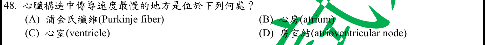
本地原卷PDF27 · 官方混科卷PDF27 · 官方原答案PDF1最下方生物表 · 已核對生物釋疑PDF4下方及5
官方採計：D 原答案：D
未列於本輪取得111生物釋疑PDF4下方及5；依同年度答案PDF1最下方生物表採計；不宣稱不存在其他未取得公告
主分類：Ch42 Circulation and Gas Exchange
42.2 / Maintaining the Heart’s Rhythmic Beat
文字目錄作Maintaining the Heart’s Rhythms；本輪PDF46實際目錄作Maintaining the Heart’s Rhythmic Beat。原文字檔保留。 目錄行2776；條目起始印刷頁928；實際目錄 PDF46
主分類理由：42.2 / Maintaining the Heart’s Rhythmic Beat：928頁房室結傳遞延遲約0.1秒讓心房先排空，直接辨識最慢選項。
次分類理由：無另列最小次條目；928頁AV延遲0.1秒與心室快速配送相反，選D；PDF46目錄確為Rhythmic Beat，年度別名記錄完成。
科學說明：官方D AV node；Purkinje為快速分送心室訊號。真實PDF46目錄題名Maintaining the Heart’s Rhythmic Beat，文字目錄的Rhythms縮寫不一致，年度證據依PDF校正並保留原別名，不改原檔。
來源涵蓋範圍：Campbell正文支援分類原理；題目限定及來源措辭差異保留於科學說明。
教材正文：印刷928／PDF977、印刷929／PDF978
補充來源：本題未另列課本外來源
另行比較：Purkinje命名突出是否會比AV更慢？
928頁AV延遲0.1秒與心室快速配送相反，選D；PDF46目錄確為Rhythmic Beat，年度別名記錄完成。
結論：證據確認，分類疑義已解決。完整覆核紀錄
Q49 · 45.1 / Chemical Classes of Hormones 正式分類
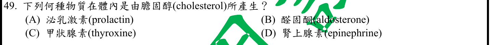
本地原卷PDF27 · 官方混科卷PDF27 · 官方原答案PDF1最下方生物表 · 已核對生物釋疑PDF4下方及5
官方採計：B 原答案：B
未列於本輪取得111生物釋疑PDF4下方及5；依同年度答案PDF1最下方生物表採計；不宣稱不存在其他未取得公告
主分類：Ch45 Hormones and the Endocrine System
45.1 / Chemical Classes of Hormones
目錄行3001；條目起始印刷頁1001；實際目錄 PDF47
次分類：Ch45 Hormones and the Endocrine System
45.3 / Adrenal Hormones: Response to Stress
目錄行3039；條目起始印刷頁1012；實際目錄 PDF47
主分類理由：45.1 / Chemical Classes of Hormones：1001–1002頁激素化學分類將類固醇歸為膽固醇衍生物，是題目生合成來源的直接規則。
次分類理由：45.3 / Adrenal Hormones: Response to Stress：1013–1014頁腎上腺皮質礦物皮質激素及aldosterone補足具名例子。
科學說明：官方B醛固酮。泌乳激素為蛋白，甲狀腺素和腎上腺素為酪胺酸衍生物；共同是激素不代表共同由膽固醇合成。
來源涵蓋範圍：Campbell正文支援分類原理；題目限定及來源措辭差異保留於科學說明。
教材正文：印刷1001／PDF1050、印刷1002／PDF1051、印刷1012／PDF1061、印刷1013／PDF1062、印刷1014／PDF1063
補充來源：本題未另列課本外來源
另行比較：均為內分泌物是否都有膽固醇母核？
1001–1002化學類別與1014醛固酮直接交叉，三種非類固醇選項排除，主化學分類、次腎上腺。
結論：證據確認，分類疑義已解決。完整覆核紀錄
Q50 · 42.6 / How a Mammal Breathes 正式分類
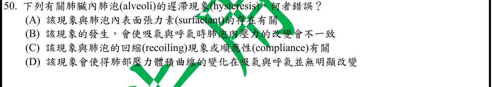
本地原卷PDF27 · 官方混科卷PDF27 · 官方原答案PDF1最下方生物表 · 釋疑PDF5
官方採計：D 原答案：D
同年度釋疑維持原答案D
主分類：Ch42 Circulation and Gas Exchange
42.6 / How a Mammal Breathes
目錄行2840；條目起始印刷頁945；實際目錄 PDF46
次分類：Ch42 Circulation and Gas Exchange
42.5 / Lungs
目錄行2827；條目起始印刷頁942；實際目錄 PDF46
主分類理由：42.6 / How a Mammal Breathes：945頁哺乳類呼吸壓力與容積變化，為肺壓容積遲滯最接近的最小目錄。
次分類理由：42.5 / Lungs：943頁surfactant降低肺泡表面張力，連接遲滯與回縮的機制。
科學說明：官方D錯，釋疑維持；吸氣與呼氣壓容積路徑不同即hysteresis。精確曲線常比較跨肺壓與肺容積，不把它等同每一瞬間「肺泡內氣壓必定不同」；零流量時吸呼末肺泡壓可同為大氣壓。Campbell支援呼吸／界面原理，遲滯由原始肺充氣研究補足；原「表面張力素」保留，意為降低表面張力的surfactant。
來源涵蓋範圍：Campbell支援所列分類原理；具名物種地點、現代技術與科學界線由列示來源補足，實讀範圍見來源紀錄。
教材正文：印刷943／PDF992、印刷944／PDF993、印刷945／PDF994、印刷946／PDF995
補充來源：S50
另行比較：肺泡內壓、跨肺壓與順應性是否被混用？
壓容積曲線有吸呼路徑差異支持D錯；模型原始研究區分PAC−PPL與全肺壓力，零流量時肺泡壓相同不構成反例。官方措辭範圍明記。
結論：證據確認，分類疑義已解決。完整覆核紀錄
目前篩選沒有符合的題目；本年度總數仍為50題。
補充來源
查證日期：2026-09-09。使用原始研究摘要、官方資料與作者教材，不宣稱所有出版商全文已取得。詳細界線見來源紀錄。
- S02 EMA Vaxzevria公開評估
AZ使用非複製型ChAdOx1腺病毒載體攜帶S基因，直接支持Q2B。
實讀範圍：官方索引取得產品組成段落；未下載整份PDF，不引用頁碼或宣稱完整產品評估實讀。僅補歷史平台機制。
原始來源1 - S06 NCBI MeSH ECL定義
ECL接受gastrin刺激釋histamine，再促進胃酸分泌。
實讀範圍：官方主題詞定義搜尋讀回；沒有以Campbell未列ECL的段落充作具名證據。
原始來源1 - S07 NHGRI Mosaicism
單一受精卵來源且有不同基因組細胞的個體；不同於多合子嵌合。
實讀範圍：官方完整詞條定義；頁面2026更新日期為本輪讀取內容時間背景，不當作2022考試公告日期。
原始來源1 - S13 McGarry等1977及原作者Foster2012
原始大鼠肝研究示malonyl-CoA抑制脂肪酸氧化；原作者解釋CPT1與飢餓肝酮體生成的開關。
實讀範圍：1977摘要；2012摘要及肝代謝/CPT1敘述段落。不是人體全類型糖尿病臨床證據，不擴張所有組織。
原始來源1 · 原始來源2 - S18 FlyBase C(1)RM資料庫
具名attached-X也是homo_compound；兩同源X臂共用著絲點。
實讀範圍：實讀Description、Rearrangement及Synonyms等欄位。未將FlyBase資料库當做官方考試裁決，也未讀公告所引Genetics6e完整128頁。
原始來源1 - S20 Endotext estrogen生合成
aromatase將testosterone及androstenedione分別轉成estradiol及estrone。
實讀範圍：作者教材搜尋讀回的estrogen biosynthesis明確反應段落；未宣稱整章實讀。NCI一般inhibitor詞條僅作先期檢索，不當作精確反應唯一證據。
原始來源1 - S24 NCI Bevacizumab
Avastin為bevacizumab商品名，阻斷VEGF及血管新生。
實讀範圍：官方頁首藥物機轉及US Brand Names，未評估處方適應症或提出醫療建議。
原始來源1 - S25 Parrott等2014鱷魚性別決定甲基化
研究顯示孵化溫度相關SOX9與aromatase啟動子甲基化，反駁溫度決定必無表觀調控。
實讀範圍：完整PubMed摘要；未取得出版商全文，無四選項影響大小定量比較。出版2014早於2022考試。
原始來源1 - S39 Saper等2010 Sleep State Switching
上腦幹及下視丘喚醒路徑與VLPO促眠並存，不能將單一核團功能外推整個腦區。
實讀範圍：PubMed摘要與圖1–3文字圖說；PMC完整頁驗證碼阻擋，沒有宣稱全文實讀。此文即111釋疑所引Neuron68:1023–1042。
原始來源1 · 原始來源2 - S43 楊桃草酸鹽腎病病例
兩病例提示食用楊桃後草酸鹽相關腎損傷及沉積，支持成分C而非普遍結石風險。
實讀範圍：PubMed搜尋摘要段落，未取得全文或讀取患者個人資料。病例中的腎病不冒充皆已診斷renal calculi。
原始來源1 - S44 Alberts等Molecular Biology of the Cell4e膜結構
作者教材描述連續脂質雙層約5nm，支持A100Å的相近奈米量級，非全膜統一定值。
實讀範圍：NCBI授權搜尋取得Chapter10 Membrane Structure段落，非Campbell頁碼。書頁註可搜尋不可整書瀏覽，未宣稱整書下載。
原始來源1 - S46 Weisleder與Ma2008：Altered Ca2+ sparks in aging skeletal and cardiac muscle
正文定義骨骼肌一T小管加一對SR終池的triad；圖1文字及正文對比心肌dyad與骨骼肌triad。
實讀範圍：PubMed摘要及Figure1圖說；追加PMC搜尋讀回的junction定義與骨骼／心肌比較段落，未取得出版商完整全文。屬作者學術綜述，沒有冒稱原始實驗或外部第二位覆核者。
原始來源1 · 原始來源2 - S47 Clinical Methods3e Chapter61 Cranial Nerve V
三叉神經下頜支攜運動纖維，支配咀嚼肌。
實讀範圍：原作者Walker教材Definition的Sensory／Motor與Basic Science相關段落；章號61依當前來源確認，不沿用檢索誤記章號。
原始來源1 - S50 1983肺充氣研究及2020多尺度健康肺原始模型
離體犬肺泡募集研究及健康肺模型支持壓容積遲滯；2020模型區分局部跨肺壓、胸膜壓與氣道阻力。
實讀範圍：1983摘要搜尋讀回；2020摘要、模型氣體組件和圖7–9相關文字搜尋讀回。PMC直接頁驗證碼阻擋；未把搜尋段落冒稱全文或直接人體實驗。
原始來源1 · 原始來源2